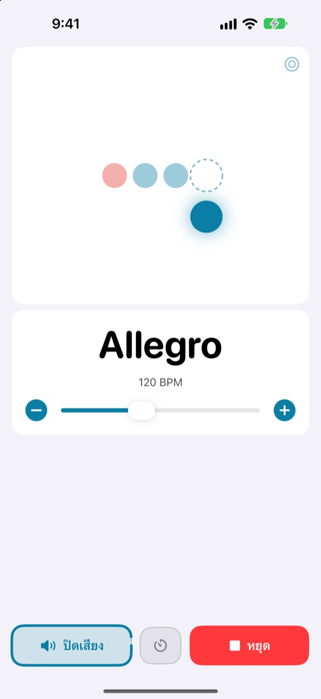
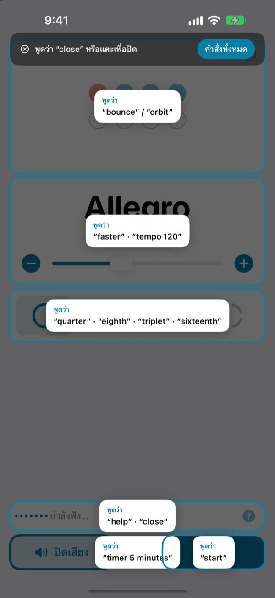
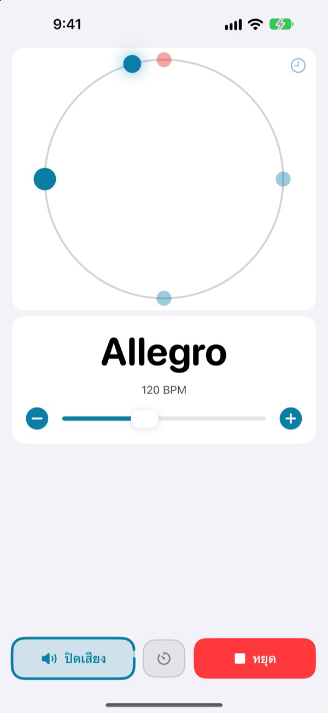
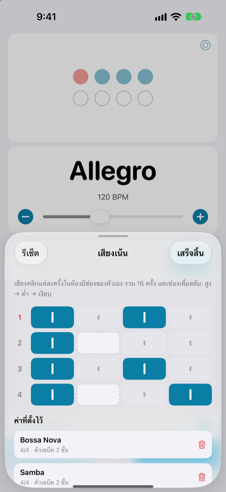

มืออยู่บนเครื่องดนตรี
ความเร็วสั่งด้วยเสียง
เล่นอยู่แล้วพูดว่า faster เสียงคลิกก็เร็วขึ้นทันที ไม่ต้องเอื้อมไปแตะจอ ไม่ต้องหยุดเล่นเพื่อเปลี่ยนความเร็ว
เมโทรนอมเต็มรูปแบบและการควบคุมด้วยเสียงใช้ฟรี

ลองพูดดูเลย
แตะปุ่ม หรือเปิดไมค์แล้วพูดเป็นภาษาอังกฤษ มีเสียงคลิกดังออกมา อย่าลืมเช็กระดับเสียง
แค่อยากปรับความเร็วนิดเดียว แต่ฟีลหลุดหมด?
วางคันชัก คาบปิ๊กไว้ในปาก แตะจอสองครั้ง แล้วฟีลที่เพิ่งจับได้ก็หายไป Not My Tempo เปลี่ยนความเร็วได้ด้วยคำเดียว ในท่าที่คุณกำลังเล่นอยู่
พูดปุ๊บ ตามปั๊บ
ใช้คำภาษาอังกฤษสั้น ๆ อย่าง start, faster และ tempo 120 แอปเริ่มฟังทันทีที่เปิด โดยไม่ต้องเปิดการควบคุมด้วยเสียงของ iOS หรือการตั้งค่าการช่วยการเข้าถึงใด ๆ
ลืมคำสั่งใช่ไหม พูดว่า help แล้วทุกคำที่ใช้ได้จะขึ้นบนหน้าจอ

ดูจังหวะด้วยตาได้ด้วย
เลือกได้สามแบบ ทั้งลูกบอลเด้ง วงโคจร และวงแหวน จังหวะแรกของห้องจะเป็นสีแดงและคลิกดังกว่า
แตะตามจังหวะบนวงโคจรแล้วแอปจะบอกว่าคุณตรงจังหวะแค่ไหน

บันทึกเสียงเน้นแยกตามเพลง
กำหนดเสียงคลิกแต่ละครั้งในห้องให้เป็นสูง ต่ำ หรือเงียบ แล้วเก็บไว้เป็นพรีเซ็ตของแต่ละเพลง จะบอสซาโนวาหรือแซมบ้า ทำครั้งเดียว ครั้งหน้าแค่เลือก (Pro)

เริ่มได้ในสามขั้นตอน
- 1
เปิดแอป
แอปเริ่มฟังทันทีที่เปิด
- 2
อนุญาตไมค์
แอปจะขอสิทธิ์ใช้ไมค์และการรู้จำเสียงพูดเพียงครั้งแรกครั้งเดียว
- 3
พูดหรือแตะ
ทุกคำสั่งมีปุ่มบนหน้าจอให้แตะได้เหมือนกัน
คำสั่งที่พูดได้
- start · stop
- เล่น หยุด
- faster · slower
- เพิ่มหรือลดครั้งละ 5 BPM
- up · down
- เพิ่มหรือลดครั้งละ 1 BPM
- tempo 120
- ตั้งความเร็วที่ต้องการทันที
- double · half
- เร็วขึ้นสองเท่า ช้าลงครึ่งหนึ่ง
- three beats
- เปลี่ยนอัตราจังหวะ
- quarter · eighth · triplet · sixteenth
- แบ่งจังหวะย่อย
- louder · quieter · mute
- เสียงคลิกดังขึ้น เบาลง ปิดเสียง
- volume 60
- ตั้งระดับเสียงเป็นเปอร์เซ็นต์
- bounce · orbit
- เปลี่ยนมุมมองจังหวะ
- timer 5 minutes
- ตั้งตัวจับเวลาซ้อม
- practice
- ค่อย ๆ เพิ่มความเร็วระหว่างซ้อม (Pro)
- tune
- เปิดเครื่องตั้งสาย (Pro)
- help
- แสดงคำสั่งทั้งหมด
- close · done
- ปิดแผงที่เปิดอยู่
การรู้จำเสียงทำงานเป็นภาษาอังกฤษ (สหรัฐอเมริกา) จึงต้องพูดคำสั่งเป็นคำภาษาอังกฤษ ยังไม่รองรับคำสั่งภาษาไทย หน้าจอแอปแสดงเป็นภาษาไทย และทุกคำสั่งแตะปุ่มแทนได้
เมโทรนอมใช้ฟรี อยากได้มากกว่านั้นมี Pro
ฟรี
- คำสั่งเสียงทั้งหมด
- อัตราจังหวะ 1 ถึง 8 จังหวะ พร้อมเน้นจังหวะแรก
- แบ่งจังหวะย่อยแบบตัวดำ ตัวเขบ็ต ทริปเปิล และตัวเขบ็ต 2 ชั้น
- มุมมองลูกบอลเด้ง วงโคจร และวงแหวน
- แตะหาความเร็วและตรวจความแม่นจังหวะ
- ตัวจับเวลาซ้อม
Not My Tempo Pro
- โหมดฝึกซ้อม: เพิ่ม BPM ทีละนิดทุกไม่กี่ห้อง จนถึงความเร็วเป้าหมาย
- ตัวแก้ไขเสียงเน้นพร้อมพรีเซ็ตแยกตามเพลง
- เครื่องตั้งสายโครมาติก
สมัครรายปีพร้อมทดลองใช้ฟรี หรือซื้อแบบตลอดชีพครั้งเดียว
การควบคุมด้วยเสียงและฟีเจอร์การช่วยการเข้าถึงจะฟรีสำหรับทุกคนตลอดไป ถ้าคุณซื้อแอปไว้ก่อนมี Pro คุณใช้ฟีเจอร์ Pro ได้ครบทุกอย่างแล้ว
คำถามที่พบบ่อย
พูดภาษาไทยได้ไหม
การรู้จำเสียงทำงานเป็นภาษาอังกฤษ (สหรัฐอเมริกา) คำสั่งจึงเป็นคำภาษาอังกฤษอย่าง start และ faster คำสั่งสั้น ๆ ทั้งนั้น ใช้ไม่นานก็คล่อง และทุกคำสั่งแตะปุ่มแทนได้
แอปไม่ได้ยินที่ฉันพูด
ดูว่าสถานะไมค์ขึ้นว่า “กำลังฟัง” หรือไม่ ถ้าปิดอยู่ให้แตะ “ฟัง” ถ้าอยู่ในที่เสียงดังหรือเปิดลำโพงดัง ๆ ให้ใช้หูฟัง เสียงคลิกจะได้ไม่เข้าไมค์ และแอปจะฟังได้แม่นขึ้นมาก
การฟังปิดไปเอง
เพื่อประหยัดแบตเตอรี่ แอปจะหยุดฟังเมื่อไม่มีคำสั่งไปสักไม่กี่นาที แตะ “ฟัง” เพื่อเปิดอีกครั้ง
ความเร็วออกมาเป็นครึ่งหนึ่งหรือสองเท่า
พูดว่า double หรือ half ก็แก้ได้ทันที
ใช้เครื่องตั้งสายยังไง
พูดว่า tune หรือแตะปุ่มรูปคลื่นเสียงบนการ์ดความเร็ว เล่นโน้ตหนึ่งตัว เมื่อตัวชี้เข้าไปอยู่ในช่วงสีเขียวแปลว่าเสียงตรงแล้ว พูดว่า close เพื่อปิด
ฉันใช้การควบคุมด้วยเสียงของ iOS อยู่แล้ว
ปิดไมค์ของแอป แล้วสั่งงานด้วยการพูดชื่อปุ่มแทน ปุ่มควบคุมทุกปุ่มมีป้ายกำกับสำหรับ VoiceOver
เสียงของฉันถูกส่งไปที่ไหนหรือเปล่า
ไม่ แอปรู้จำเสียงบนอุปกรณ์ของคุณ ไม่บันทึก ไม่จัดเก็บ และไม่ส่งออกไปไหน เมโทรนอม การควบคุมด้วยเสียง และเครื่องตั้งสายใช้ได้แม้ไม่มีอินเทอร์เน็ต
ยกเลิกการสมัครยังไง
ไปที่ การตั้งค่า > บัญชี Apple > การสมัครสมาชิก แผนรายปีจะต่ออายุอัตโนมัติ เว้นแต่จะยกเลิกอย่างน้อย 24 ชั่วโมงก่อนสิ้นสุดรอบปัจจุบัน ส่วนแบบตลอดชีพชำระครั้งเดียว
มีคำถามหรือข้อเสนอแนะ ส่งมาที่ leeo@kakao.com